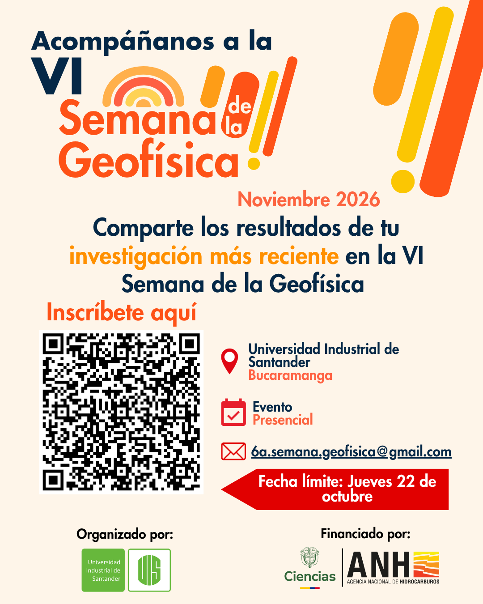

Link de recepción de resúmenes
Comparte tu investigación en la VI Semana de la Geofísica
La VI Semana de la Geofísica abre la convocatoria para la recepción de resúmenes de trabajos que serán presentados en modalidad póster. Esta es una oportunidad para divulgar avances científicos, metodologías, resultados y aplicaciones relacionadas con la geofísica, la geología y las geociencias.
El evento se realizará presencialmente del 3 al 7 de noviembre de 2026 en la Universidad Industrial de Santander, en Bucaramanga.
¿Por qué presentar tu investigación?
Divulga tus resultados
Presenta los principales aportes de tu investigación ante estudiantes, profesores, profesionales e investigadores de diferentes áreas de las geociencias.
Recibe retroalimentación
Intercambia conocimientos, discute tus resultados y conoce nuevas perspectivas que pueden contribuir al desarrollo de tu trabajo.
Establece conexiones académicas
Conoce investigadores con intereses similares y genera oportunidades de colaboración académica y científica.
Da visibilidad a tu trabajo
Comunica tus avances mediante un póster claro, visual y accesible para los asistentes al evento.
Líneas temáticas
La convocatoria incluye investigaciones relacionadas con:
- Exploración, adquisición e inversión geofísica.
- Métodos eléctricos, electromagnéticos y potenciales.
- Inteligencia artificial, modelos de lenguaje y métodos computacionales.
- Geoestadística, modelamiento y simulación numérica.
- Sismología, amenazas naturales y gestión del riesgo.
- Teledetección, monitoreo ambiental y cambio climático.
- Hidrogeología, geotecnia y agrogeofísica.
- Recursos minerales, hidrocarburos, energías renovables y transición energética.
Consulta en el flyer el listado completo de líneas temáticas y selecciona aquella que mejor represente tu investigación.
¿Cómo enviar tu resumen?
1. Revisa las líneas temáticas
Identifica el área que mejor se relaciona con tu trabajo.
2. Prepara tu resumen
Describe de manera clara el propósito de la investigación, la metodología utilizada, los principales resultados y las conclusiones más relevantes.
3. Completa el formulario
Registra la información de los autores y sigue las indicaciones disponibles en el formulario de recepción de resúmenes.
4. Envía tu propuesta a tiempo
La fecha límite para la recepción de resúmenes es:
Jueves 22 de octubre de 2026
¡Presenta tu investigación y forma parte de este espacio de intercambio científico y académico!
